Rome
Rome's ancient core still runs the show: the Pantheon's portico stands almost exactly as Agrippa left it, the Altare della Patria rises in gleaming white marble nearby, and the Colosseum's weathered arches sit just past the Arch of Constantine. Down along the Tiber, Ponte Rotto's broken remains mark the site of the city's oldest stone bridge, and Castel Sant'Angelo's fortress walls rise across the water. The Baroque city takes over from there — the Spanish Steps climbing to Trinità dei Monti, and the Trevi Fountain drawing a crowd both up close and from across the piazza. Away from the monuments, a Roman street market piles ceramics and souvenirs into every corner, and a glass of wine cools table-side at Emma. The day closes on the Janiculum Hill, where the Fontana dell'Acqua Paola pours in front of a passing wedding car, and the whole city spreads out below through the trees.
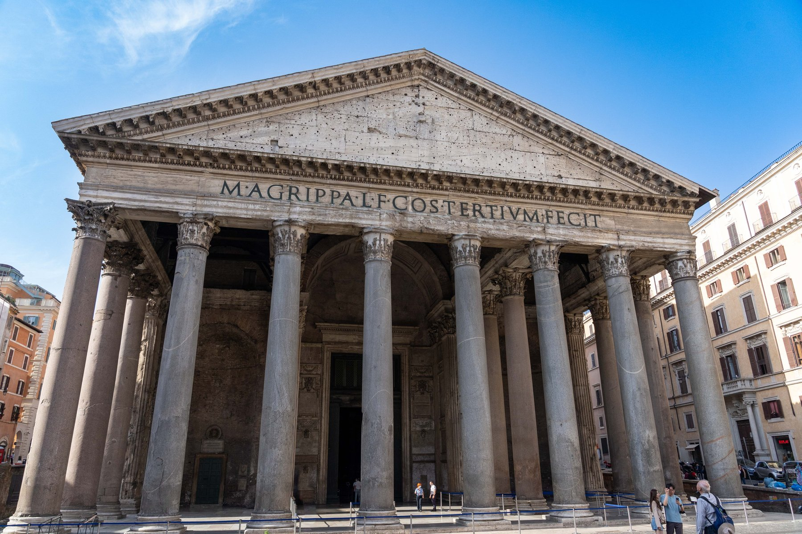
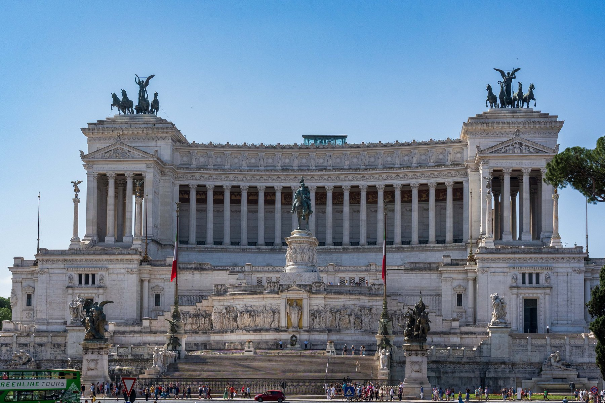
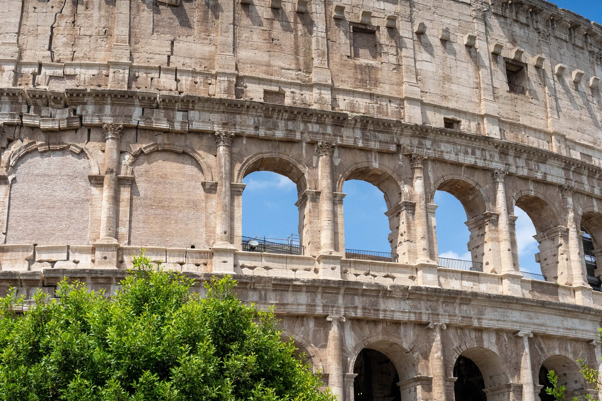
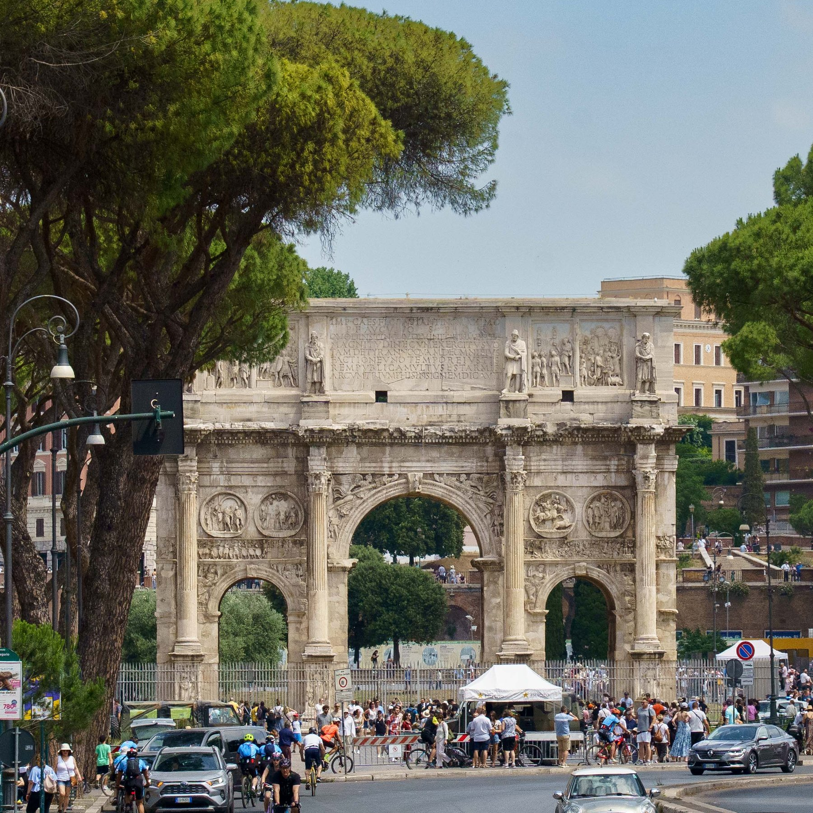
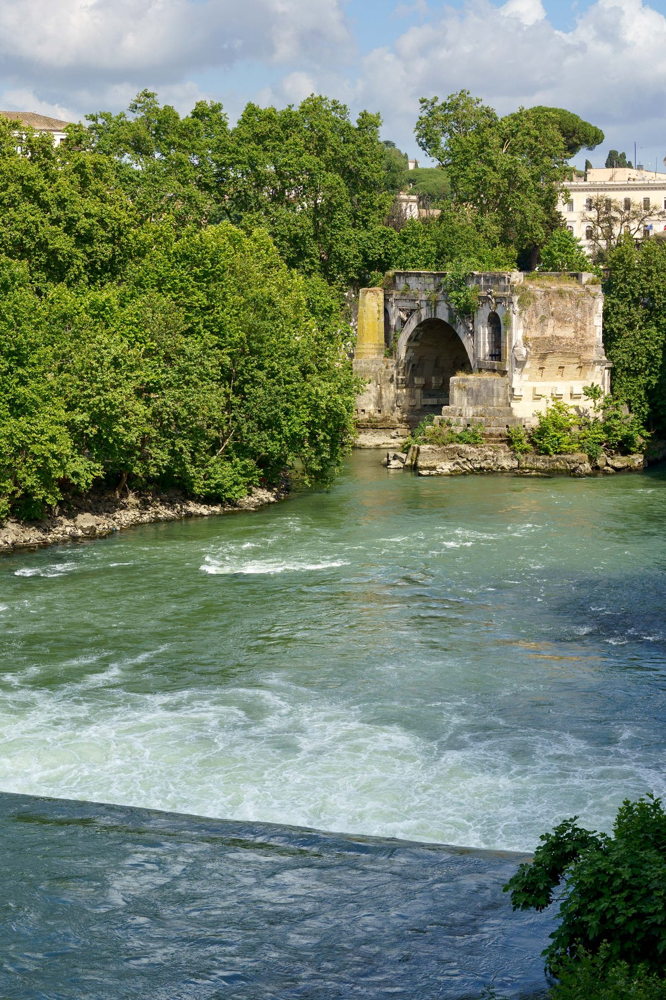
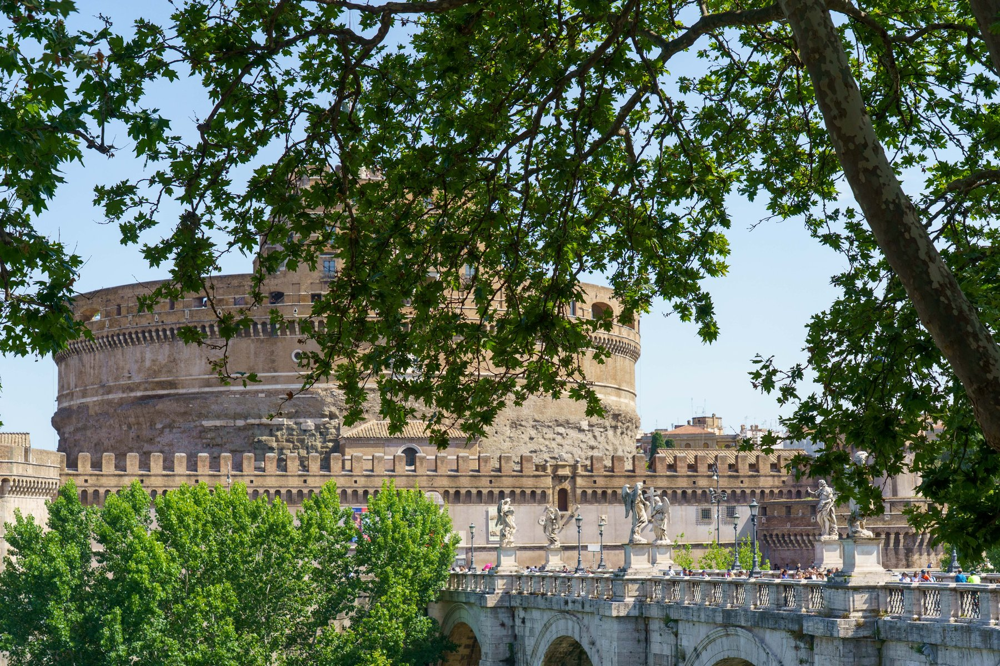
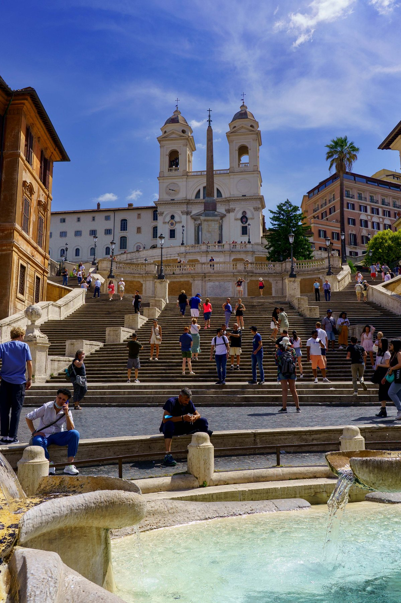
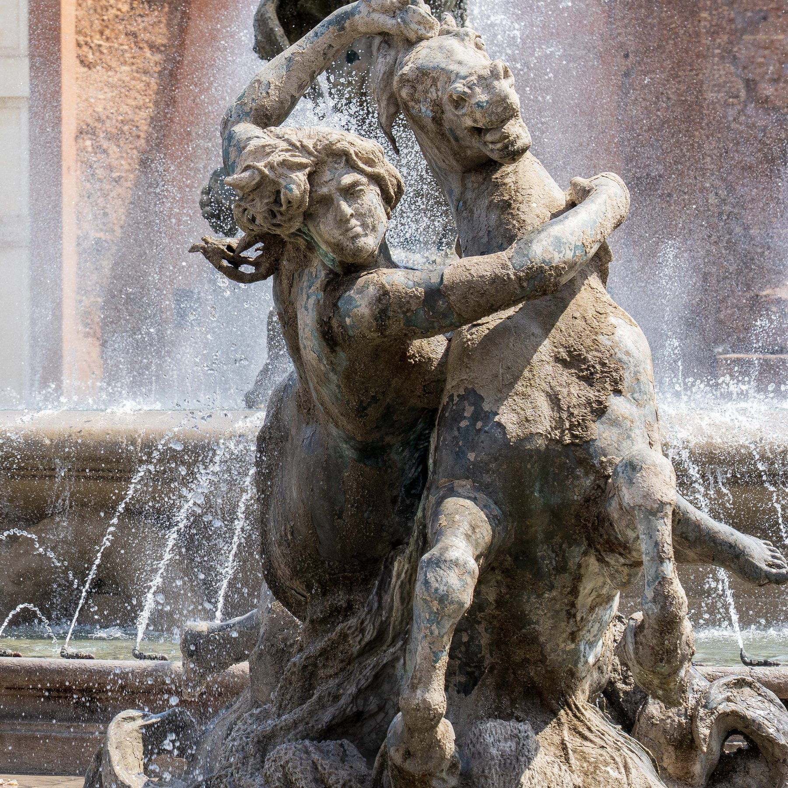
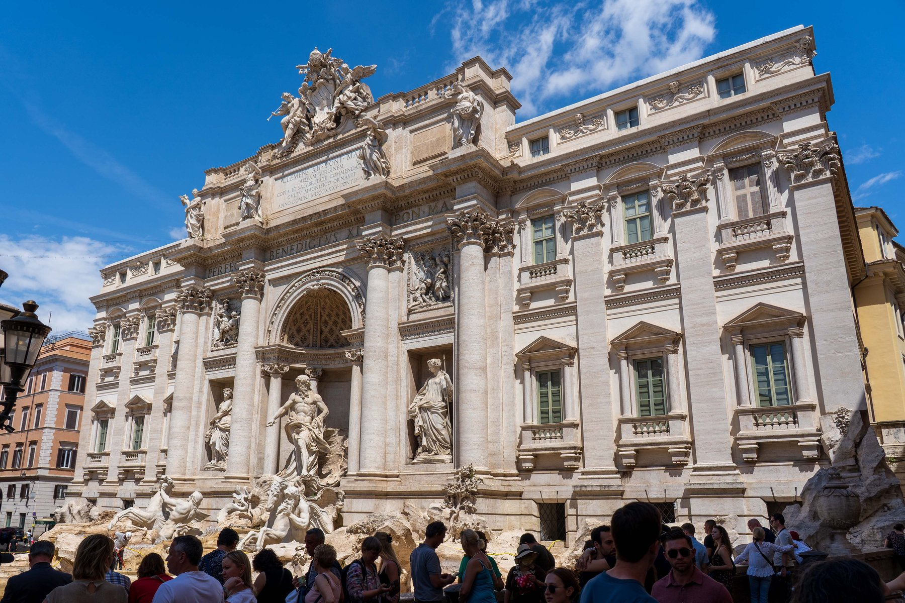
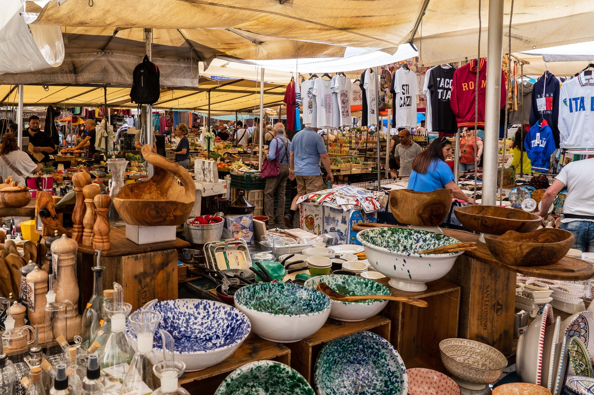
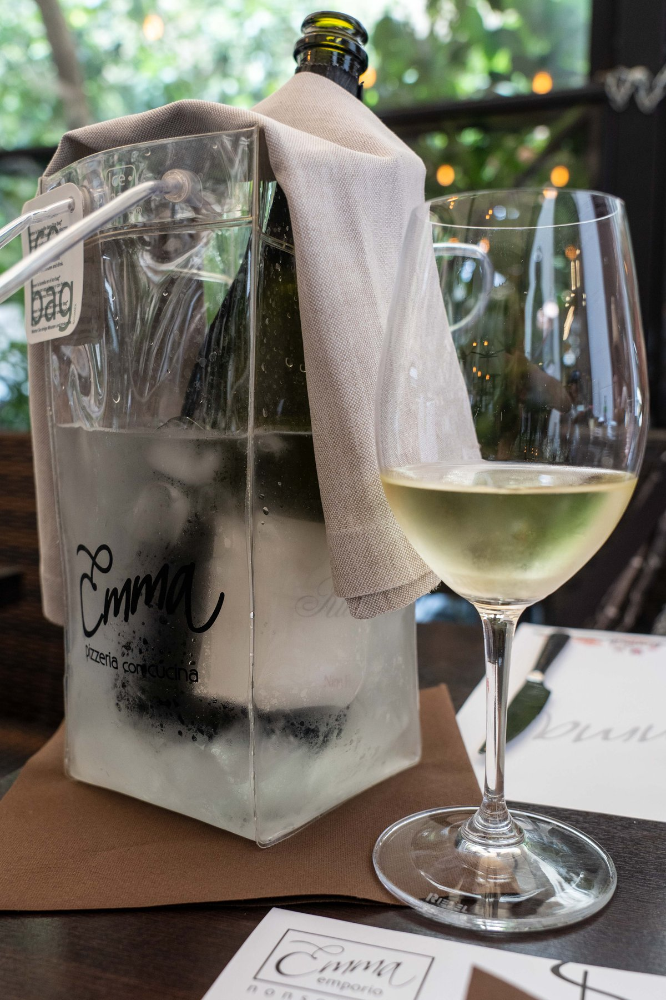
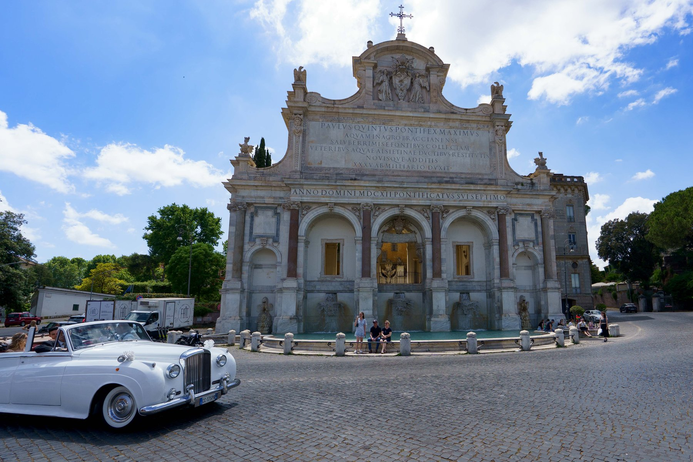
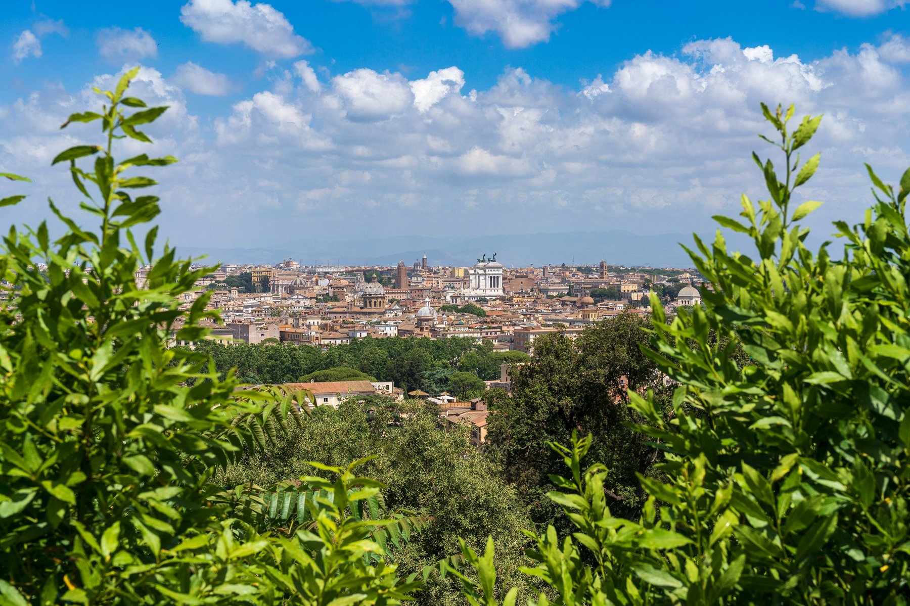